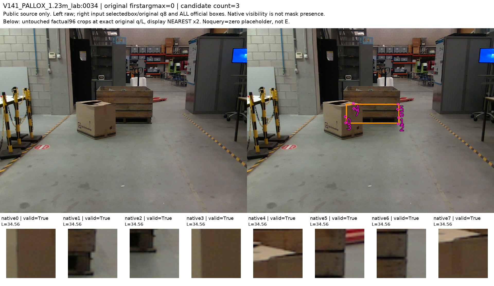
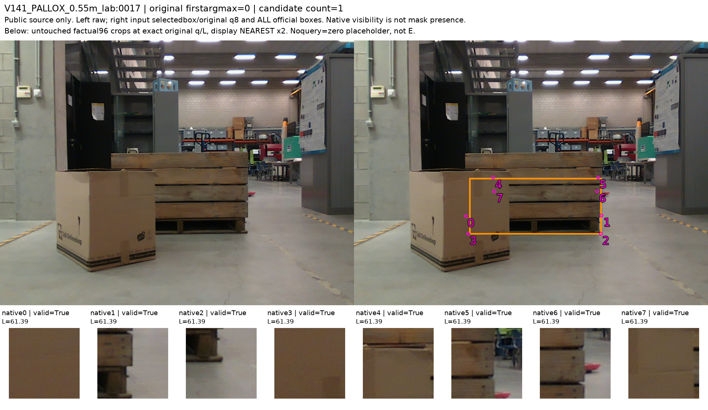
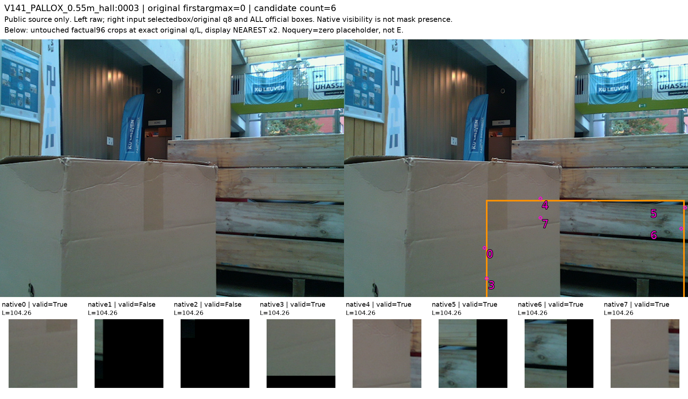
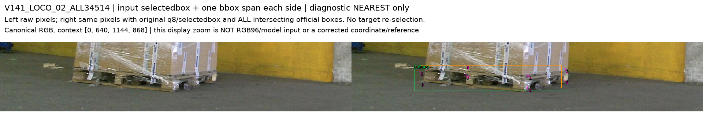
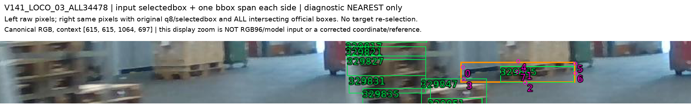
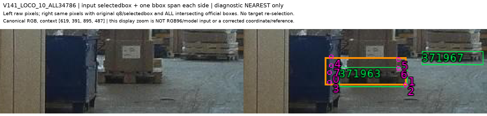

원래 공개16장/128슬롯을 실제 영상과 crop으로 검토해 D10/E3/U115의 부분 weak supervision을 정리했다. TRAIN D10/E2, VAL_HALL E1이다. 의미 있는 학습 자원을 만들었지만, 이 수로 일반화 성능이나 완전한 학습 데이터셋을 확보했다고 할 수는 없다.
원래 첫 선택·query·crop 크기·native 순서를 유지했다. 가림 모델 점수나 현재 평가223장은 사용하지 않았다. 무검출8/OOB13/입력valid107과 의미 라벨은 별도로 보존했다. source assistant의 구조 역할 판정이며 사람 gold·픽셀 mask·정밀 물리 꼭짓점 정답이 아니다.
| 범위 | D 보임 | E 외부가림 | U 미확정 |
|---|---|---|---|
| TRAIN | 8 | 0 | 88 |
| TRAIN_LAB | 2 | 2 | 12 |
| VAL_HALL | 0 | 1 | 15 |
| 원 frame | native | 분할 | weak 상태 | 입력 valid | 역할 근거 |
|---|---|---|---|---|---|
| 510708010,1049.jpg | 2 | TRAIN | D | True | FRONT_BOTTOM_RIGHT |
| 510708010,1049.jpg | 3 | TRAIN | D | True | FRONT_BOTTOM_LEFT |
| 1574676323336,24.jpg | 1 | TRAIN | D | True | FRONT_TOP_RIGHT |
| 1574676323336,24.jpg | 2 | TRAIN | D | True | FRONT_BOTTOM_RIGHT |
| 516447400,977.jpg | 1 | TRAIN | D | True | FRONT_TOP_RIGHT |
| 516447400,977.jpg | 2 | TRAIN | D | True | FRONT_BOTTOM_RIGHT |
| 1574675697.7382686.jpg | 1 | TRAIN | D | True | FRONT_TOP_RIGHT |
| 1574675697.7382686.jpg | 2 | TRAIN | D | True | FRONT_BOTTOM_RIGHT |
| 1.23m_lab:0034 | 2 | TRAIN_LAB | D | True | SHARED_WHOLE_ASSEMBLY_FRONT_LOWER_VIRTUAL_FOOTPRINT |
| 1.23m_lab:0034 | 3 | TRAIN_LAB | E | True | SHARED_WHOLE_ASSEMBLY_FRONT_LOWER_VIRTUAL_FOOTPRINT |
| 0.55m_lab:0017 | 2 | TRAIN_LAB | D | True | SHARED_WHOLE_ASSEMBLY_FRONT_LOWER_VIRTUAL_FOOTPRINT |
| 0.55m_lab:0017 | 3 | TRAIN_LAB | E | True | SHARED_WHOLE_ASSEMBLY_FRONT_LOWER_VIRTUAL_FOOTPRINT |
| 0.55m_hall:0003 | 3 | VAL_HALL | E | True | WHOLE_ASSEMBLY_FRONT_LOWER_VIRTUAL_FOOTPRINT |
Pallox 상자 전체의 상단 코너를 하부 팔레트 상단으로 복사하지 않는다. 전체 조립체의 X/Z 가상 footprint와 하단 평면을 고정하면 하부2/3 역할은 모든 가능한 상단 높이에서 유지된다. 오른쪽 지지대는 노출되고, 왼쪽 하부는 앞 cardboard가 가린다. 바닥 픽셀 색이나 query 오차로 라벨을 정하지 않았다.



LOCO02 상단0/1은 포장재·적재물과 deck corner 구별이 불명확해 U다. LOCO10 왼쪽0/3은 파란 통이 뒤 팔레트를 가리는 장면은 보이지만 폭·역할 대응이 조건부여서 E 후보만 보존하고 primary U로 둔다. LOCO03 왼쪽0/3도 인접 팔레트와 전체 폭이 불명확해 U를 유지한다.



TRAIN의 12개는 후속 source-only 약한 지도학습 대조에서 사용할 수 있는 부분 라벨이다. 이 단계에서는 학습에 넣지 않았다. VAL_HALL의 E1은 오직 보조 진단으로 유지하며 이것만으로 성능·문턱·모델을 고를 수 없다. 정확한 base 상단 경계와 standalone base의 가로 범위, 모든 객체의 native8 대응은 아직 확인되지 않았다.